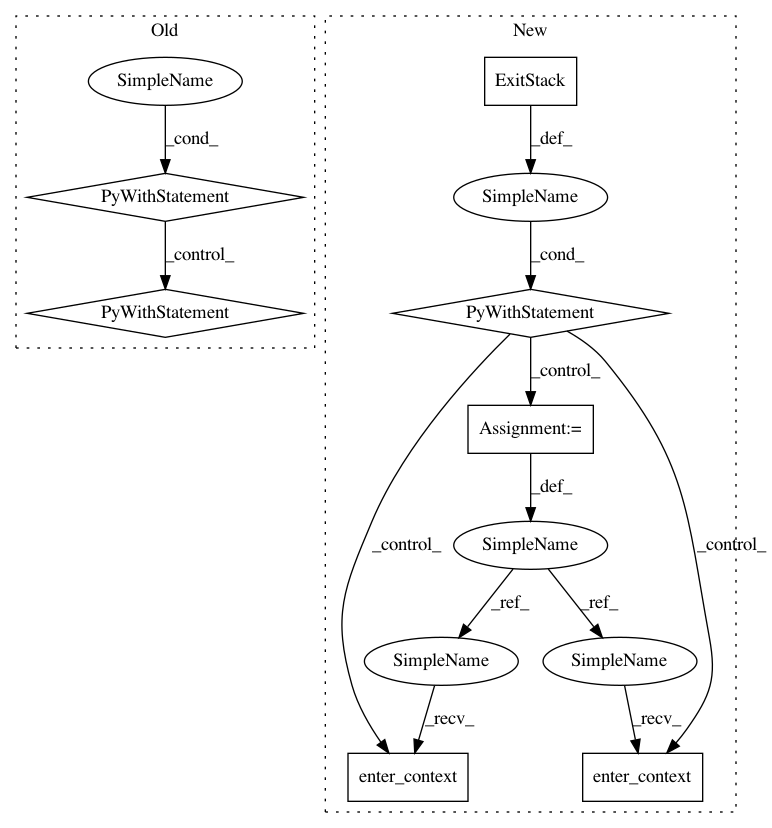

bde4d188c147cb27b55c8b6c76bff14c0d490af8,sonnet/src/replicator.py,TpuReplicator,scope,#TpuReplicator#,141
Before Change
@contextlib.contextmanager
def scope(self):
parent_scope = super(TpuReplicator, self).scope()
with parent_scope, tf.variable_creator_scope(replica_local_creator_tpu):
yield
After Change
@contextlib.contextmanager
def scope(self):
with contextlib.ExitStack() as stack:
stack.enter_context(super(TpuReplicator, self).scope())
stack.enter_context(tf.variable_creator_scope(replica_local_creator_tpu))
// The two hacks below enable a large speedup when initializing TPUs (on
// a 4x4 slice startup for ResNet50 goes from 42m -> 2m).
// TODO(tomhennigan) Remove these workarounds.
stack.enter_context(tf.variable_creator_scope(create_variables_eagerly))
stack.enter_context(eager_initial_values())
yield
In pattern: SUPERPATTERN
Frequency: 3
Non-data size: 7
Instances
Project Name: deepmind/sonnet
Commit Name: bde4d188c147cb27b55c8b6c76bff14c0d490af8
Time: 2019-09-18
Author: tomhennigan@google.com
File Name: sonnet/src/replicator.py
Class Name: TpuReplicator
Method Name: scope
Project Name: uber/pyro
Commit Name: e1f44ea0337ace78ef8b796439139acbec60dd37
Time: 2020-09-20
Author: fritzo@uber.com
File Name: pyro/contrib/forecast/forecaster.py
Class Name: HMCForecaster
Method Name: forward
Project Name: deepmind/sonnet
Commit Name: bde4d188c147cb27b55c8b6c76bff14c0d490af8
Time: 2019-09-18
Author: tomhennigan@google.com
File Name: sonnet/src/replicator.py
Class Name: TpuReplicator
Method Name: scope
Project Name: deepmind/sonnet
Commit Name: c787becf4d41944658591ea63ff56e4661ebc3eb
Time: 2019-10-30
Author: tomhennigan@google.com
File Name: sonnet/src/replicator.py
Class Name: Replicator
Method Name: scope